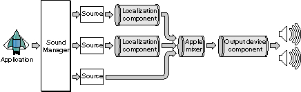
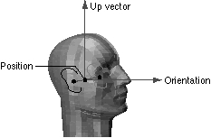
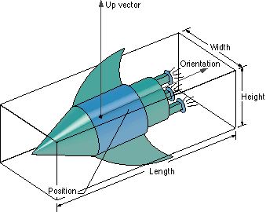
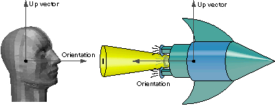
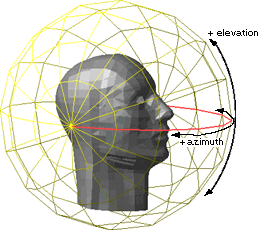

About SoundSprocket
SoundSprocket is the part of Apple Game Sprockets that provides spatial (that is, three-dimensional) filtering for sounds. SoundSprocket extends the capabilities of the Sound Manager so that you can make some sounds appear to be emanating from a specific location and distance from the user, possibly also moving in space.To perceive the spatial filtering provided by SoundSprocket, the listener should have some sort of stereophonic sound output hardware. The hardware can be a set of external speakers (such as the AppleDesign Powered Speakers), the speakers built into a monitor (such as the Apple AudioVision 14 Display), or a set of headphones. When only one speaker is available, directional localization cannot be provided, but some other spatial cues (such as Doppler effect and both distance and angular attenuation) are still provided.
When stand-alone stereo speakers are used, for optimal enjoyment of the sound, they should be placed so they are equally spaced on opposite sides of the monitor, roughly at head level. Optimal for each speaker is approximately 30 degrees left and right from the listener when directly facing the monitor.
Performance is a key factor in most games. SoundSprocket is designed to work with both hardware- and software-based methods of 3D sound filtering. Your application (probably a game) does not need to know how the sounds you play are being filtered. When software-based 3D sound filtering is active, SoundSprocket provides a way to scale the fidelity of the output sound by increasing or reducing the CPU load caused by 3D sound filtering. The filtering algorithms offer discrete performance steps pairing CPU time with fidelity.
SoundSprocket provides both high-level and low-level interfaces for managing 3D sound filtering. The low-level interfaces allow you to install a localization component and send messages to it (using the Sound Manager) to control the sound filtering directly. The localization component is a sound component that provides 3D filtering for the sounds passed to it, as illustrated in Figure 1-1. To use the low-level interfaces, you must provide the sound coordinates in listener-relative, polar coordinates, and they must be provided in meters.
Figure 1-1 The position of the localization component
 The high-level SoundSprocket interfaces consist principally of functions that you conveniently use to create and manipulate listeners and sound sources (which are described more fully below). The high-level interfaces simply fill in the data structures you pass to the Sound Manager's
SndGetInfoandSndSetInfofunctions to control the sound filtering. Coordinates for the high level functions are specified in Cartesian space (with three-dimensional x, y and z axes), either by position and orientation vectors, by transformation matrix, or by QuickDraw 3D camera positions. Unlike the low-level interface, any unit of measure can be used, and velocities may be specified directly or may be computed automatically.
The following sections describe in greater detail the capabilities provided by SoundSprocket.
- IMPORTANT
- Sound Manager version 3.2.1 or later is required for SoundSprocket. In addition, the SoundSprocket filter component must be present in the Extensions Folder at start-up time. (See "Getting and Setting Sound Channel Information" (page 1-67) for a description of the
SndGetInfoandSndSetInfofunctions.)
The Virtual Audio Environment
SoundSprocket provides and manages a virtual audio environment for your application. The virtual audio environment consists of a single listener and one or more 3D sound sources in three-dimensional space. You should limit the number of sources to achieve a clear presentation of sound to your listener. Four sources are typical; let your ear be the final judge, not the arbitrary limit of four. The sources emit sounds that are heard by the listener. Both the listener and all its associated sound sources have a position and an orientation in three-dimensional space. In addition, both the listener and the sound sources have a number of properties that affect the way in which sounds are filtered. For example, a listener can have a velocity that contributes to audio effects such as Doppler shift when it moves relative to a sound source.
Each listener and each sound source has a transformation matrix (or transform matrix) associated with it that is applied to the position, orientation, and velocity of the object to determine its actual position, orientation, and velocity in the virtual audio environment. To move a listener or sound source, you can either change its position or its transformation matrix, or both.
- Note
- An object's velocity is independent of its orientation. It's possible, for example, for an object to be oriented straight ahead while moving to the right.
The velocity vector associated with a listener or a sound source specifies the current direction and speed of the object. You can set the velocity vector directly, in which case the actual velocity is the specified velocity transformed by the transformation matrix. Alternatively, you can leave the velocity vector unchanged and allow SoundSprocket to compute the object's velocity by calculating the difference between the object's transformed position in successive updates and dividing that difference by the time elapsed between the updates.
Each source also has additional characteristics. The source sound has a reference distance--when the sound source is this far from the listener, its distance filtering is unchanged. This enables the source to be very loud but very distant (or very quiet and very near). The source may be a volume (such as a cube) that is emitting sound uniformly within, for example a water fountain that makes noise from a broad space. In contrast, a source may emit sound more loudly in one direction than in others such as a space ship that emits noise primarily from the rear where the rocket is firing.
In addition to the audio effects due to the relative motions of a listener and its sound sources, SoundSprocket provides effects due to the medium through which sound is traveling, the relative humidity of the air, reverberation from the walls of the room the listener is in, the distances separating a listener from its sound sources, and the relative orientations of the listener and its sources.
Listeners
A listener is the part of the virtual audio environment that perceives sounds. A listener defines the position, orientation, and velocity of the user's "head" in the virtual audio environment. The position of a listener is the midpoint of the line connecting the two ears. The orientation of the listener is the unit vector that points forward (through the nose) from the listener's position. The up vector is the unit vector that points straight up through the top of the listener's head. Figure 1-2 illustrates these features.Figure 1-2 The position, orientation, and up vector of a listener
 A listener has a number of properties that define some global environmental characteristics, including the following:
- The sound medium through which sound is traveling. The sound medium determines the speed at which sounds travel and the distance attenuation due to the distance from the listener to a sound source. The default sound medium is dry air at standard temperature and pressure (namely, 20ö C at 760 mm of mercury), but you can also specify water as the sound medium. Most games do not need to adjust the sound medium. When the medium is air, you can also specify the relative humidity of the air. Humidity is a floating-point value between 0.0 (indicating dry air) and 100.0 (indicating dense fog).
- The reverberation caused by sound bouncing off the walls of the room the listener is in. You can adjust the room size, the reflectivity of the reverberant walls, and the amount of reverberation to be mixed into the final output sound.
When you use SoundSprocket's low-level interfaces, you specify all distances in meters. However, when you use SoundSprocket's high-level interfaces, you can choose the unit (called the listener unit) in which you want to specify distances. You can set the listener unit by calling the
- IMPORTANT
- In SoundSprocket version 1.0, the localization component ignores any values you specify for a listener's sound medium and relative humidity. SoundSprocket assumes dry (zero humidity) air.
SSpListener_SetMetersPerUnitfunction to set the number of meters in the listener unit. For example, to specify all distances in feet, you would set the number of meters per listener unit to 0.3048. Similarly, to specify all distances in miles, you would set the number of meters per listener unit to 1609.3.Sound Sources
A 3D sound source (or, more briefly, a sound source or source) is a part of the virtual audio environment that emits sounds heard by the listener. A source has a position and orientation in three-dimensional space, as well as a velocity and other characteristics that affect the sounds produced by the source.
A sound source has a bounding box that defines its size and position, as shown in Figure 1-3. The bounding box is available only via the high-level interface. The position of a sound source is the center of the bounding box. The length of the source is measured along the orientation vector, and the height is measured along the up vector. The width of the source is measured along the remaining axis (which is perpendicular to both the orientation and up vectors). By default, a sound source is a point source (0.0 for all distances).
- IMPORTANT
- Do not confuse SoundSprocket's 3D sound sources with the Sound Manager's sound sources. (A Sound Manager sound source is the origin of a specific channel of sound.)
Figure 1-3 The position, orientation, and up vector of a sound source
 A sound source has a number of properties that define specific characteristics of the sound it emits, including the following:
Figure 1-4 The angular attenuation cone
- A reference distance that is the distance, in meters or listener units, from a listener to the point at which a sound was recorded. When the source is located exactly at its reference distance from the listener, there is no distance attenuation (that is, loss of volume due to distance) applied to the sound. When the source is farther away than the reference distance, the sound is attenuated. When the sound is closer than the reference distance, the sound might be amplified.
- A source mode that specifies the type of filtering that is to be applied to a source sound. By default, a source sound is localized in space (that is, made to appear at a specific location). Alternatively, you can specify that a sound be ambient (that is, made to appear to come from all directions). See "Source Modes" (page 1-26) for a complete description of the available source modes.
- An angular attenuation cone that determines the direction of maximum sound intensity. A sound source can emit sound louder in the direction of its orientation vector than in other directions. As the angle between the orientation vector and the source-to-listener vector increases toward a predefined limit (the cone angle), the sound amplitude is increasingly attenuated, up to the maximum angular attenuation. The default setting is for uniform attenuation in all directions, which you achieve by setting the cone attenuation to 0.0. Figure 1-4 illustrates the angular attenuation cone.
- In addition to reverberation for the listener, the source may have distinct localized reflections. These reflections are represented by virtual sources with a distinct position. This feature is not supported in version 1.0.
 When you use the low-level interfaces, you specify the location of a sound using listener-relative polar coordinates, with all distances specified in meters. Figure 1-5 illustrates the low-level specification of the location of a 3D sound source.
Figure 1-5 Specifying the location of a sound source
 As you can see, the coordinate system is like a globe with the poles at the listener's ears and the origin at the listener's nose.
When you use the high-level interfaces, however, you can specify the location of a sound using Cartesian coordinates or other equivalent means (such as QuickDraw 3D camera positions).
Optimizing Sound and Performance
Sounds that contain only high-pitched frequencies don't localize as well as full-spectrum sounds. Also, sounds that are recorded with reverb will have their reverb localized along with the sound itself. This is typically not the desired effect. The reverb effect that SoundSprocket provides is not intended for high-quality music processing.Sounds played in localized or ambient mode should consist of a single monophonic channel. If a stereo sound is processed in these modes, it is first mixed down to a single channel, resulting in slightly lower performance. Sounds played in binaural mode should be stereo. It is a common practice in game programming to allocate fewer sound channels than there are sonic entities in the game. When a sound needs to be played, an sound channel that isn't busy is used. SoundSprocket can be used in this scenario as well. One thing that you need to do is make sure that any lingering localization parameters are overridden for the new sound. That is, you must send an
siSSpLocalizationmessage if there is any chance that the last one that was sent to the sound channel had parameters different from the desired ones.When using the high-level API you may either keep a source per sound entity or a source per sound channel. If you choose the latter, and are letting SoundSprocket compute velocities for an entity, incorrect velocities are generated when the position jumps when the source is used for an entity in a different location. This problem is easily circumvented by setting the velocity of the source to (0,0,0) when it is given the discontinuous position
Experiencing Game Sound Via Speakers and Headphones
The sounds generated by your game are presented to the user through speakers or headphones. When speakers are used, they must be stereo speakers placed on either side of the monitor. A crosstalk cancellation filter allows the left signal to be heard predominantly by the left ear, and the right signal by the right ear. There is a sweet spot several inches across midway between the two speakers, allowing the user to comfortably move their head without losing the effect. If a single speaker is used, directional localization cues are unavailable.If the user is using headphones during game play, delivering the left and right signals to the appropriate ear is easy, so the crosstalk cancellation filter is not used if headphones are specified. However, the localization effect may be diminished because the virtual audio environment moves with the user, somewhat muting the illusion of a stable environment.
The best of both worlds may be obtained by adding head tracking to the mix. This is a natural thing to do when the game is played on a head-mounted display. The listener position in the virtual audio environment can then be changed as the user's position changes in the real world. In this instance, the illusion of a stable virtual audio environment is maintained, thus keeping sound quality extremely high.